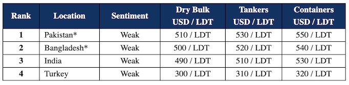

inWeekly Demolition Reports19/08/2023

The lethargy in sub continent recycling markets continues for another week as owners and cash buyers comtinue to offload tonnage at spiralling prices, chasing down rates seemingly by the day.
Indeed we have seen prices decline from over USD 600/LT LDT earlier this year, to seeing several standard (albeit poor condition) dry bulk sales below USD 500/LDT recently.
So a fall of over USD 100/LDT has been realized in recycling markets since the start of the summer and the age old problems persist of strained LCs and lack of financing, meaning there appear to be more vessels than capable end buyers at present – certainly in the more challenging markets of Pakistan and Bangladesh.
India remains a constant market, in terms of end buyers capable of opening LCs, yet prices are once again positioned at the bottom of the pile in the sub continent, with most end users fearful of committing on fresh tonnage such has been the extent and ferocity of recent price falls.
The supply of tonnage – particularly from Far East and China markets – has remained a constant over these summer months (when it is usually quieter), and those cash buyers who have bougbht ‘as is’ tonnage without back to back end users in place have been hardest hit with tumbling levels and a stockpile of seemingly unsellable tonnage.
There is hope however that once monsoon season ends and product starts to shift from yards and mills reopen, that we may see a greater demand at least to acquire once again.
For week 33 of 2023, GMS demo rankings / pricing for the week are as below.

📄 Download PDF: Ship-recycling-market-insight-week-33-2023-Lethargy.pdfSource: GMS,Inc. ,https://www.gmsinc.net/gms_new/index.php/web